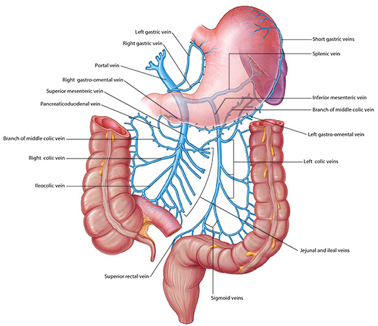
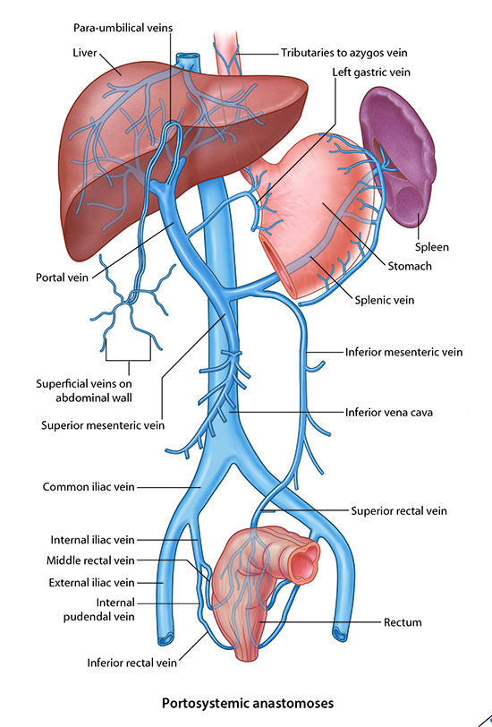

Small and Large Intestine - Page 7 of 7
|  |
| Click on image to enlarge |
Now add the drainage from the midgut and hindgut.
| Add the superior rectal veins. | |
| Add the sigmoid veins. | |
| Add the left colic veins. |
Although the collateral connections from the rectal veins to the iliac veins cannot be seen, this conncetion provides another porto-systemic connection to relieve portal hypertension.
Obstruction to the normal flow of the mesenteric venous system could lead to what physical finding in the perianal area? |
|
|
Anorectal hemorroids. |
|
|  |
| Click on image to enlarge |
| Add the jejunal veins. | |
| Add the ileal veins. | |
| Add the ileocolic veins. | |
| Add the right colic veins. | |
| Add the middle colic veins. |
Notice that the venous drainage closely follows the arterial supply of structures.